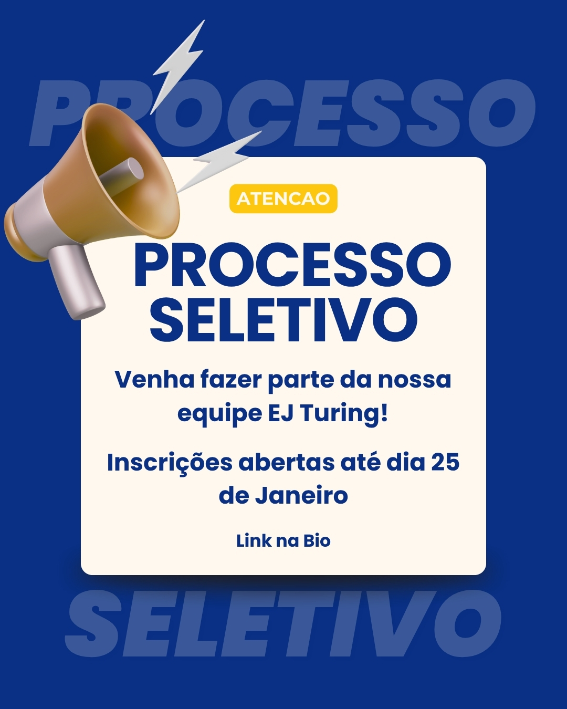

Projetos práticos e acadêmicos desenvolvidos no IFSULDEMINAS, na EJ Turing e iniciativas de software, jogos e design.
Design & Branding Membro de Marketing, Design e Projetos
EJ Turing | Revitalização de Identidade Visual e Marketing
Liderança na reestruturação completa da identidade visual da Empresa Júnior de Engenharia de Computação do IFSULDEMINAS. O foco foi reposicionar a marca, adotando uma estética mais madura e alinhada ao mercado de tecnologia.
Atividades e Impacto
Redesign do Logotipo e Padrão Visual: Redesign do logotipo oficial e criação de um novo padrão visual moderno para todas as postagens em redes sociais.
Guia de Estilo Corporativo: Definição de uma nova paleta de cores corporativas e seleção de tipografias estratégicas alinhadas ao setor de tecnologia.
Atuação Multidisciplinar: Trabalho unindo design, marketing e gestão de projetos que resultou na modernização da imagem pública da empresa e na reanimação do engajamento orgânico.
Como Entrar em Contato — Redes SociaisFoto 1 de 3

Processo Seletivo — DivulgaçãoFoto 2 de 3
Consultoria, Manutenção & SoftwareFoto 3 de 3
Web & Front-End Desenvolvedora Voluntária
Plataforma Web | Projeto Arte de Caderno
Atuação na manutenção e desenvolvimento web do "Arte de Caderno", um projeto de extensão de abrangência nacional do IFSULDEMINAS. A iniciativa promove a inclusão artística e a conscientização patrimonial, organizando competições de desenhos espontâneos feitos por estudantes de escolas públicas de todo o Brasil.
Atividades e Impacto
Front-End Responsivo em React: Manutenção e evolução contínua da interface web em React para garantir navegabilidade fluida e excelente experiência para milhares de usuários.
Integração com MongoDB: Gerenciamento e integração de dados no MongoDB para suportar com alta estabilidade o grande volume de acessos e submissões da edição atual (2026).
Competição 100% Digital: Viabilização técnica da infraestrutura do site, permitindo que as inscrições, galerias de obras e votação aconteçam de forma totalmente digital e descentralizada em mais de 5 campi.
Game Dev & Unity Bolsista de Desenvolvimento
Jogo Educacional de Geografia
Participação no desenvolvimento de um jogo educacional (serious game) focado no ensino de geografia. A narrativa imersiva acompanha uma protagonista moradora de uma favela que precisa investigar e resolver um mistério local, unindo engajamento lúdico e aprendizado escolar.
Atividades e Impacto
Programação da Lógica em C#: Implementação da lógica principal do jogo em C# utilizando o motor gráfico Unity.
Sistema Interativo de Diálogos: Criação, estruturação e implementação do sistema interativo de diálogos e condução da narrativa investigativa.
Otimização e Triggers de Eventos: Configuração de triggers de eventos para progressão da história e manutenção contínua do código para otimização da jogabilidade e performance.
Mobile & Android Desenvolvedora (Projeto de Curso)
Aplicativo Mobile | Turismo Regional em Poços de Caldas
Idealização e desenvolvimento de um aplicativo mobile voltado para o fomento do turismo na região de Poços de Caldas. A aplicação serve como um guia digital completo para moradores e turistas otimizarem sua experiência na cidade.
Atividades e Impacto
Prototipação UI/UX no Figma: Concepção de wireframes, fluxos de usuário e protótipos de alta fidelidade para uma interface intuitiva e acessível.
Desenvolvimento Nativo em Java: Implementação nativa para Android em Java utilizando o ambiente Android Studio e conceitos sólidos de Orientação a Objetos.
Guia de Serviços e Pontos Turísticos: Implementação de funcionalidades práticas para mapeamento e busca de eventos próximos, pontos turísticos, restaurantes e serviços locais.
Vamos Conversar!
Entre em contato para oportunidades de estágio e projetos em Design, Games, Web e Mobile.